正文
白嫖服务器！
去下面这个链接领一个 3 个月的学生服务器：
{kind=link}
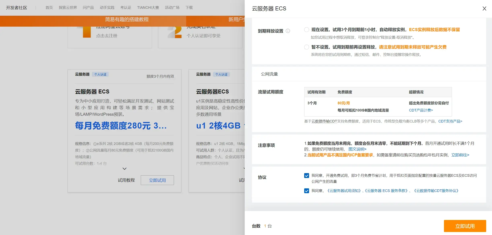
MobaXterm 连接服务器
在服务器控制台中设置远程连接：
{kind=link}
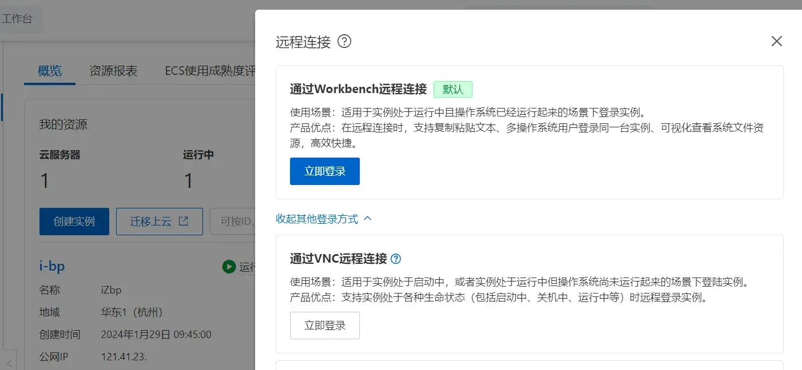
重置连接密码：
{kind=link}
MobaXterm 下设置好对应的公网 IP，以 root 用户连接：
{kind=link}
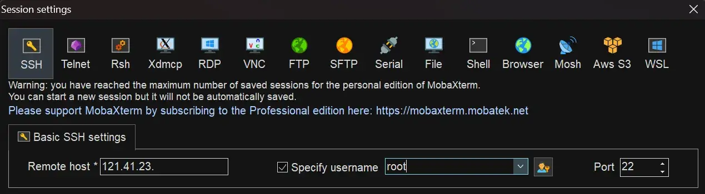
输好密码，成功连接！
{kind=link}
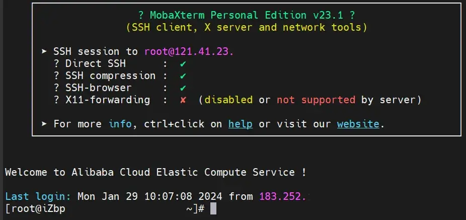
Nginx
安装 Nginx
下面的操作基本按照下面的连接来做：
新建一个文件夹并转到该目录 /usr/local/nginx 下以存放 nginx：
mkdir /usr/local/nginx
cd /usr/local/nginx 从 nginx: download 里下载一个 nginx，这里是 nginx-1.24.0.tar.gz，上传到服务器并解压：
tar -xvf nginx-1.24.0.tar.gz{kind=link}
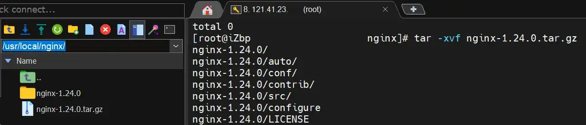
转到这个文件夹 /usr/local/nginx/nginx-1.24.0/ 下：
cd /usr/local/nginx/nginx-1.24.0/ 安装 nginx：
yum -y install gcc zlib zlib-devel pcre-devel openssl openssl-devel
./configure --with-http_stub_status_module --with-http_ssl_module
make
make install 启动 Nginx：
cd /usr/local/nginx/sbin
/usr/local/nginx/sbin/nginx -c /usr/local/nginx/conf/nginx.conf
./nginx -s reload 查看 Nginx 是否启动成功（这个进程是否在运行）：
ps -ef | grep nginx{kind=link}
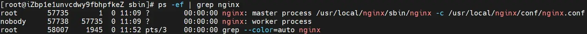
NginX 相关命令：
- 重新加载 nginx 配置文件并重启 nginx：
shell ./nginx -s reload
- 启动 nginx：
shell ./nginx
- 强制停止 nginx：
shell ./nginx -s stop
- 优雅的停止 nginx：
shell ./nginx -s quit
- 查看 nginx 的版本：
shell nginx -v
- 杀死所有 nginx 进程：
shell killall nginx
- 查看 nginx 是否启动：
shell ps -ef | grep nginx #
开放 80 端口
配置 80 端口并关闭 Linux 防火墙：
systemctl status firewalld
firewall-cmd --zone=public --add-port=80/tcp --permanent
firewall-cmd --reload 阿里云控制台下，设置 安全组 让任何 IP 都可访问 80 端口。
{kind=link}
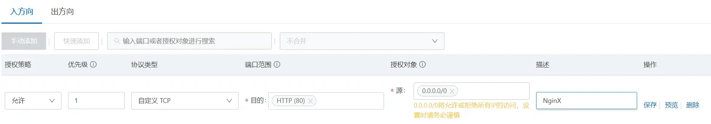
开跑！
浏览器下输入服务器公网 IP（124.41.23.XXX）：
{kind=link}
配置 Ningx 指向的页面（如果要用 git，这章可跳过）
新建一个文件夹以存放静态网页的页面：
cd /
mkdir work
cd /work
mkdir statics 将静态网页的资源传到这个文件夹下：
{kind=link}
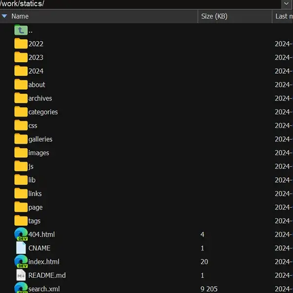
进 /usr/local/nginx/conf/，编辑 nginx.conf，修改 http{} 里的 server 属性（将 location 和 404 页面换成自己的）：
server {
listen 80;
server_name localhost;
#charset koi8-r;
#access_log logs/host.access.log main;
location / {
root /work/statics/;
index index.html index.htm;
}
error_page 404 /404.html;
location = /404.html {
root /work/statics/;
}
... 重启 NginX 服务：
cd /usr/local/nginx/sbin
./nginx -s quit
/usr/local/nginx/sbin/nginx -c /usr/local/nginx/conf/nginx.conf
./nginx -s reload 进服务器公网 IP（124.41.23.XXX）查看页面及 404 页面是否有效。
git
安装 git
安装 git：
yum install git 添加一个账户 git，用于控制推送：
useradd git 给这个 git 账户加点权限：
chmod 740 /etc/sudoers
vim /etc/sudoers 添加：
git ALL=(ALL) ALL{kind=link}
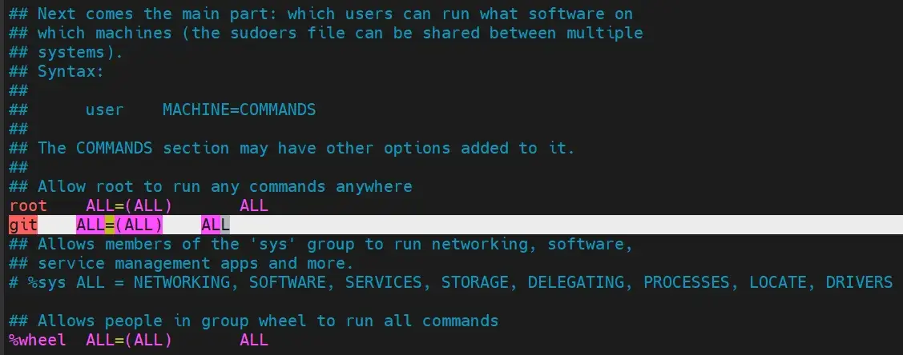
在插入模式下按下 Ctrl + O，然后输入 :wq 并按下回车键，vim 将保存文件并退出。
passwd git{kind=link}
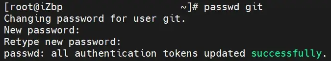
- 为本地的 hexo_blog 配置一个部署静态文件的远程仓库。
创建私有 Git 仓库，在
/var/repo/下，创建一个名为 hexo_static 的裸仓库（bare repo） 如果没有/var/repo目录，需要先创建；然后修改目录的所有权和用户权限，之后 git 用户都具备/var/repo目录下所有新生成的目录和文件的权限。
此时为 root 用户登录：
mkdir /var/repo/
chown -R git:git /var/repo/
chmod -R 755 /var/repo/
cd /var/repo/
git init --bare hexo_static.git- 创建
/var/www/hexo目录，用于 Nginx 托管（即，这个文件夹将存放静态网页的全部文件）。
mkdir -p /var/www/hexo 加点权限：
chown -R git:git /var/www/hexo
chmod -R 755 /var/www/hexo 进 /usr/local/nginx/conf/，编辑 nginx.conf，修改 http{} 里的 server 属性（将 location 和 404 页面换成/var/www/hexo/）：
server {
listen 80;
server_name localhost;
#charset koi8-r;
#access_log logs/host.access.log main;
location / {
root /var/www/hexo/;
index index.html index.htm;
}
error_page 404 /404.html;
location = /404.html {
root /var/www/hexo/;
}
... 重启 NginX 服务：
cd /usr/local/nginx/sbin
./nginx -s quit
/usr/local/nginx/sbin/nginx -c /usr/local/nginx/conf/nginx.conf
./nginx -s reload 接下来，在云服务器上的裸仓库 hexo_static 创建一个钩子，在满足特定条件时将静态 HTML 文件传送到 Web 服务器的目录下，即
/var/www/hexo
在自动生成的 hooks 目录下创建一个新的钩子文件：
vim /var/repo/hexo_static.git/hooks/post-receive 往里面添加：
#!/bin/bash
git --work-tree=/var/www/hexo --git-dir=/var/repo/hexo_static.git checkout -f{kind=link}
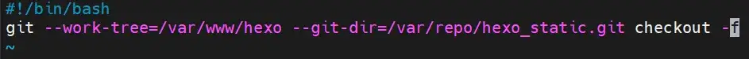
保存并退出文件，并让该文件变为可执行文件。
chmod +x /var/repo/hexo_static.git/hooks/post-receivehexo 推送到 git
在 hexo 项目的 _config.yml 中，设置部署到服务器上：
账户@服务器 IP:推送地址
{kind=link}
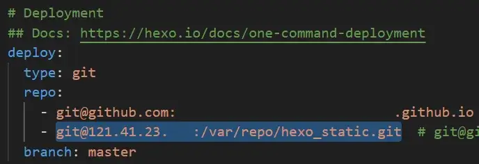
开始推送！
hexo d 非常不幸地，这个网址会因为不使用 HTTPS 而导致加密插件失效……
- 输完密码回车无任何反应（已查看之前的 issue 均无法解决问题）· Issue #128 · D0n9X1n/hexo-blog-encrypt (github.com)
- 输入密码之后没反应 console 报错如下 · Issue #114 · D0n9X1n/hexo-blog-encrypt (github.com)
SSH 免密登录与 git 推送
这样推送会要你输入密码，接下来尝试在本地建立 SSH 信任关系以实现免密登录！
MobaXterm 下 root 账户打开 RSA 认证：
vim /etc/ssh/sshd_config 最下方添加几行：
RSAAuthentication yes
PubkeyAuthentication yes
AuthorizedKeysFile .ssh/authorized_keys{kind=link}
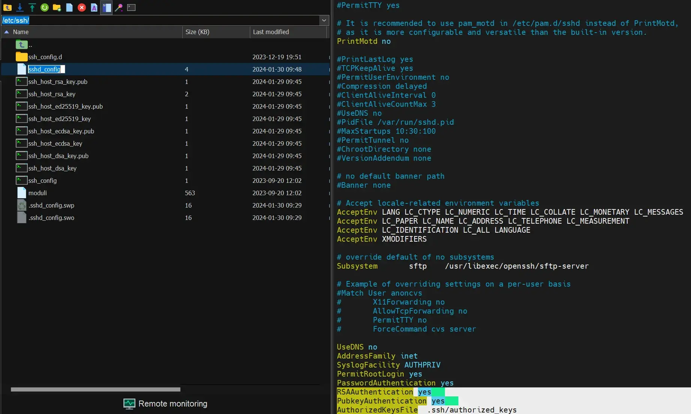
配置 SSH：
su git
mkdir /home/git/.ssh
vim /home/git/.ssh/authorized_keys 将 Windows 下 C:/用户/用户名/.ssh/id_rsa.pub 下的内容：
{kind=link}
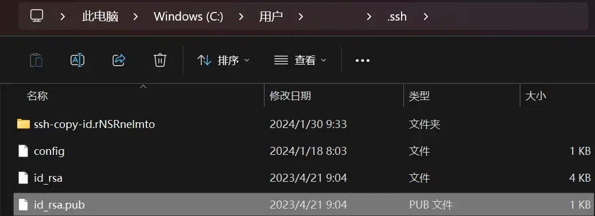
拷贝到服务器的 /home/git/.ssh/authorized_keys 中：
{kind=link}
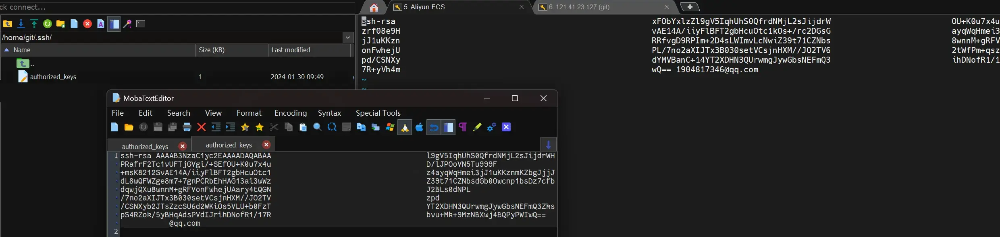
给这个文件一点权限：
chmod 600 /home/git/.ssh/authorized_keys
chmod 700 /home/git/.ssh/ 此时本机上命令（尝试以 git 账户登录服务器）：
ssh git@121.41.23.XXX 登录便不需要密码！hexo d 命令同理。
{kind=link}
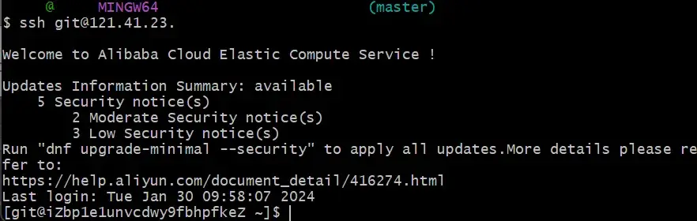
设置域名
- 学生认证域名专享低至1元 (aliyun.com) 阿里云学生认证后，可以一块钱买一年的域名，真是太棒了！
{kind=link}
买一个域名！
要实名认证才可以使用！进去操作一番，直到审核通过域名可以解析为止。
{kind=link}
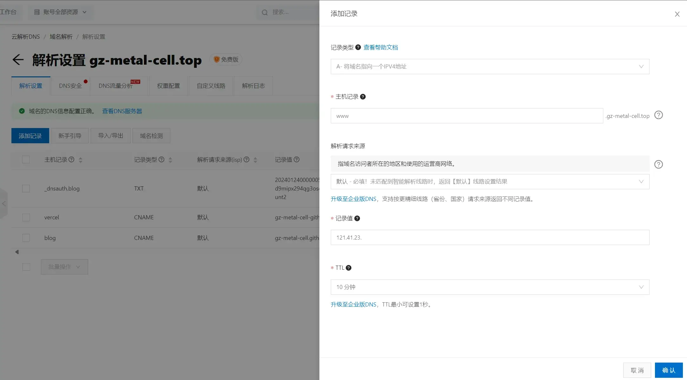
添加域名解析，将记录值设置为所购买的服务器所提供的公网 IP：
过段时间进自己的二级域名（www.gz-metal-cell.top）就会获得与进服务器公网 IP （124.41.23.XXX） 一样的效果！
但是如果设置好了 Ningx 页面的话，就会要你备案后才能使用了……（免费的服务器不让你备案呜呜呜）
{kind=link}
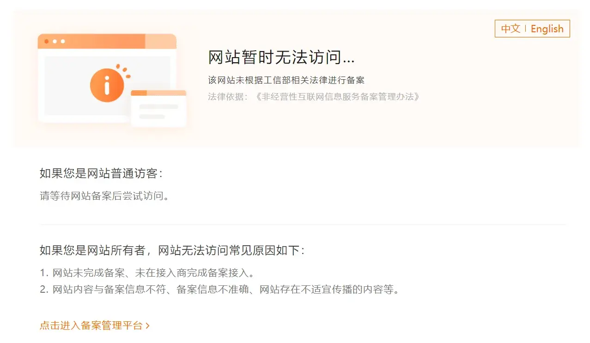